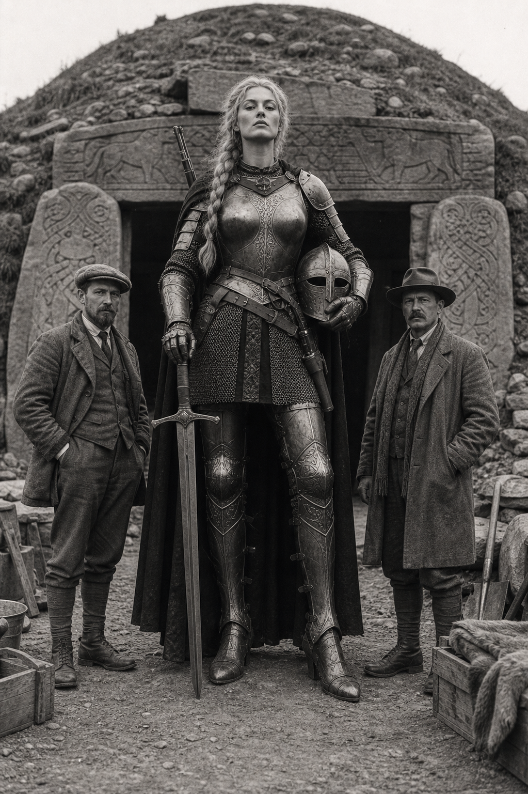

Mila Johannson
(375 Points)
Female; Age 128; 7'11", 380 lbs.
| ST: 22/13 [130] | IQ: 13 [30] | Speed: 7.25 | |
| DX: 16 [80] | HT: 13/22 [30] | Move: 6 | |
| Dodge: 8/11 | Parry: 12/17 | Block: 9/14 |
Advantages
Awareness [15]; Beautiful [15] (Reaction: +2/+4); Combat Reflexes [15] (Fright Check: 18); DR 10 (Everything) [30]; High Pain Threshold [10]; Lang: English (Accented Spoken/Accented Written) [4]; Lang: Swedish (Native) [0]; Patron (Followers of the Right Hand) (15 or less) [60] (Equipment: Standard, +5; Special Qualities (Access to Magic in Non-magical World): Very Unusual, +10; Secret: -5; Subtraction (Minimal Intervention): -5); Regeneration (1 HT/min) [35] (Normal Healing for Wounds from Magic and Some Monsters: -30%); Strong Will +3 [12] (Will: 16); Temperature Tolerance 2 [2] (Zone Center: 61; Min. Temperature: 20; Max. Temperature: 101); Unaging [15]; Unusual Background (Unaging Monster Hunter) [20].
Disadvantages
Bloodthirst [-15]; Duty (15 or less) [-25] (Involuntary: -5; Subtraction (Extremely Hazardous): -5); Enemy (Unknown Enemies of FRH) [-60] (Unknown: -5; Subtraction (Access to Magic in Non-magical World): -15); Gigantism [-10]; Second Class Citizen (Woman) [-5] (Reaction: -1); Secret (Member of Amazon Monster Hunters) [-20]; Secret Identity (Unaging Monster Hunter) [-20]; Unique [-5]; Weirdness Magnet [-15].
Quirks
Always wears boots; Impatient; Vain; Wears men's clothing; Will not touch men. [-5]Skills
Animal Handling-12 [2]; Area Knowledge (Sweden)-13 [1]; Armoury/TL6 (Body Armor)-12 [1]; Armoury/TL6 (Hand Weapons)-12 [1]; Axe Throwing-15 [½]; Axe/Mace-15 [1] (Parry: 8); Boating-14 [½]; Brawling-17 [2] (Parry: 12); Broadsword-17 [4] (Parry: 9); Climbing-14 [½]; Driving/TL6 (Automobile)-14 [½]; Fast-Draw (Broadsword)-16* [½]; Fast-Draw (Knife)-16* [½]; First Aid/TL6-13 [1]; Fishing-13 [1]; Guns/TL6 (Pistol)-17 [½]; Guns/TL6 (Rifle)-17 [½]; Guns/TL6 (Shotgun)-17 [½]; Hidden Lore (Monsters)-12 [1]; Interrogation-12 [1]; Intimidation-12 [1]; Jumping-15 [½]; Knife-15 [½] (Parry: 7); Knife Throwing-15 [½]; Mimicry (Animal Sounds)-13 [½]; Mimicry (Bird Calls)-13 [½]; Naturalist-10 [½]; Navigation/TL6-11 [1]; Orienteering-12 [1]; Research-12 [1]; Riding-14 [½]; Running (Move: 8.75)-12 [2]; Sailor/TL6-12 [1]; Seamanship/TL6-13 [1]; Shadowing-13 [2]; Shield-16 [1] (Block: 8); Shortsword-15 [1] (Parry: 8); Soldier/TL6-12 [1]; Spear-15 [1] (Parry: 8); Spear Throwing-17 [2]; Stealth-16 [2]; Survival (Arctic)-12 [1]; Survival (Woodlands)-12 [1]; Swimming-16 [1]; Symbol Drawing-11 [1]; Teamster-12 [1]; Tracking-13 [2]; Traps/TL6-13 [2]; Two-Handed Axe/Mace-14 [½] (Parry: 8); Two-Handed Sword-14 [½] (Parry: 8).
*Cost modifiers: Combat Reflexes.
Equipment
*Magic Boots (PD 2, DR 2; 3 lbs.; $80); *Magic Broadsword (thrusting) (cut 4d+1, imp 2d+2, Skill: 17, Parry: 9; 3 lbs.; $600; Reach: 1; 1; ST: 10); *Magic Gauntlets (PD 3, DR 4; 2 lbs.; $100); *Magic Greathelm (PD 4, DR 7; 10 lbs.; $340; Weapons skills at -1, senses at -3); *Magic Medium Shield (PD 3, Hits 7/40, cr 2d, Skill: 16, Block: 8; 15 lbs.; $60; Reach: 1); *Magic Spear (thrown) (imp 2d+3, Skill: 17; 4 lbs.; $40; Acc: 2; SS: 11; Half DMG: 22; MAX: 33); *Magic Steel Breastplate (PD 4, DR 5; 18 lbs.; $500); *Magic Throwing Axe (cut 4d+2, Skill: 15, Parry: 8; 4 lbs.; $60; Reach: 1; ST: 11; Throwable. 1 turn to ready.); Backpack, Canvas (3 lbs.; $10); Canteen, 1 qt (3 lbs.; $1); Cartridge Belt (2 lbs.; $1); Cigarette Lighter ($1); Clothing, Winter (PD 0, DR 1; 8 lbs.; $15; +2 HT to resist cold weather effects); Compass ($3; +1 to Orienteering); Dagger (imp 1d, Skill: 15, Parry: 7; ¼ lbs.; $20; Reach: C); Enfield SMLE No.1 Mk III .303 (cr 6d+1, Skill: 17; 9.2 lbs.; $130; Malfunction: crit.; SS: 14; Acc: 10; Half DMG: 900; MAX: 3500; RoF: 1; Shots: 10; ST: 12; Rcl: -2; TL: 6); First Aid Kit, Individual (2 lbs.; $6; +1 to First Aid); Flashlight (1 lb.; $2); Hat, Slouch ($1; TL: 6); Helmet bag, Canvas (3 lbs.; $10); Holster, Shoulder (1 lb.; $1.50; +1 to Holdout); Jacket, Heavy Leather (PD 2, DR 2; 7 lbs.; $15); Knife (large) (cut 1d+2, imp 1d+2, Skill: 15, Parry: 7; 1 lb.; $40; Reach: C, 1;C); Luger P08 9mm Parabellum (cr 2d+2, Skill: 17; 2 lbs.; $50; Malfunction: 16; SS: 9; Acc: 4; Half DMG: 150; MAX: 1850; RoF: 3~; Shots: 8+1; ST: 9; Rcl: -1; TL: 6); Overcoat, Leather (PD 1, DR 1; 6 lbs.; $25; +4 to holdout.); Remington M32 12g (cr 4d, Skill: 17; 8 lbs.; $35; Malfunction: crit.; SS: 12; Acc: 6; Half DMG: 25; MAX: 150; RoF: 2~; Shots: 2; ST: 12; Rcl: -3; TL: 6); Scarf, Silk (¼ lbs.; $5; TL: 6); Set of Common Rune Stones (¼ lbs.; $250); Watch ($5).Description
Mila Johannson walks through the modern world as if history had forgotten to finish with her. She is too old for her face, too large for ordinary comfort, too durable for common explanation, and too practiced in violence against monsters to mistake any of that for a blessing. Whatever hidden Amazon tradition produced her, it produced a huntress rather than a scholar: a woman shaped by long pursuit, sacred equipment, bodily discipline, and the hard knowledge that some things in the world do not deserve diplomacy before they deserve a spear. Her gear, scars, and instincts all imply a life spent treating monstrosity as work.What makes Mila distinctive is that she is not a myth in a vacuum. She must still move through cities, trains, hotels, alleys, and committee-made modernity while concealing both her impossible age and the true scale of her vocation. The secrecy around her is double. She carries the hidden identity of an unaging monster hunter, and she belongs to an older covert hunting tradition that the ordinary world would regard as absurd until it saw what her weapons are meant to stop. Beauty, size, and social difficulty complicate every room she enters. People stare, speculate, submit, or recoil long before they understand why.
For a new player, Mila should feel legendary in body but practical in mind. She is not there to solve a salon conversation or parse a dusty archive first. She is there to track, endure, survive, and kill the thing that should not have been allowed to keep living. The gift of the character is that all of that ferocity sits inside a woman who has had to stay hidden for more than a century and therefore knows exactly how much patience, restraint, and secrecy are required to keep a life going after the world has already become unnatural around you.